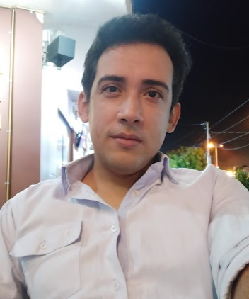

Jorge Luis Rueda Marín

Hola!, soy Jorge.
Soy Ingeniero Electrónico, Especialista en Telecomunicaciones y desarrollador software autodidacta. Me gusta la lectura, las matemáticas y todo lo relacionacionado a las tecnologías de información y comunicaciones. eletrónicas.
Soy una persona análitica en la busqueda siempre de nuevos conocimientos, confío en mi intuición para llegar a deduciones que permite la solución de problemás.
Tiendo a ser una persona timida, pero con facilidad de expresar mis argumentos de forma clara. Tengo capacidad de trabajo en equipo, respeto los párametros de una convivencía sana y agradable en el equipo de trabajo.
Me gusta debatir ideas y busco siempre sinergizar las aportes de cada integrante en el equipo de trabajo.
Soy Ingeniero Electrónico, Especialista en Telecomunicaciones y desarrollador software autodidacta. Me gusta la lectura, las matemáticas y todo lo relacionacionado a las tecnologías de información y comunicaciones. eletrónicas.
Soy una persona análitica en la busqueda siempre de nuevos conocimientos, confío en mi intuición para llegar a deduciones que permite la solución de problemás.
Tiendo a ser una persona timida, pero con facilidad de expresar mis argumentos de forma clara. Tengo capacidad de trabajo en equipo, respeto los párametros de una convivencía sana y agradable en el equipo de trabajo.
Me gusta debatir ideas y busco siempre sinergizar las aportes de cada integrante en el equipo de trabajo.